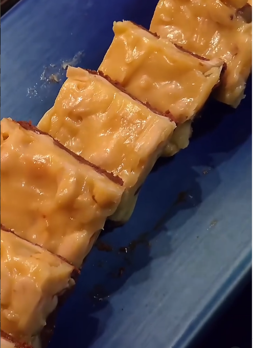

Try this quick recipe if you have some leftover condensed milk, peanuts and chocolates! Great party dessert that could made with minimal effort and ingredients that takes hold of kids instantly. If you prefer, you can add nuts of your choice.
Ingredients
- 150 g chocolates
- 30 g butter
- 125 ml condensed milk
- 120 g peanuts
Steps
- Melt 150 g of chocolates with small amount butter.
- Transfer it to a tray and refrigerate until it solidifies.
- In a hot pan add 30 g butter, 120 ml condensed milk, 120 g peanuts and mix them well.
- Transfer it to the frozen chocolate base, again refrigerate until it solidifies.
- Then cut them and serve.
Home